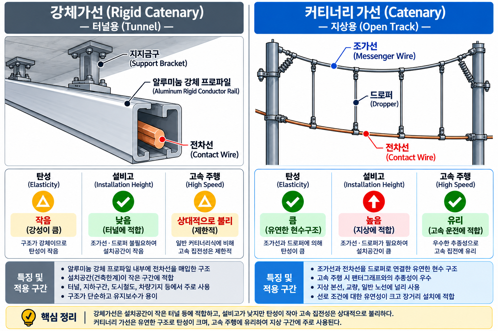

10-04 가선방식 3계열 — 직접가선·카테너리·강체가선
§0 선행 용어
조가선 / 가선 (Catenary)
전차선을 지지하는 상부 전선. 드로퍼를 통해 전차선을 매달아 수평 유지.
전차선 (Contact Wire)
팬터그래프가 직접 슬라이딩 접촉하는 하부 전선. 트롤리선이라고도 함.
드로퍼 (Dropper)
조가선에서 전차선을 매달아 수평으로 유지시키는 수직 연결선.
팬터그래프 (Pantograph)
차량 지붕에서 전차선과 슬라이딩 접촉하여 전력을 집전하는 장치.
강체가선 (Rigid Catenary)
알루미늄 도체 바(Bar)에 전차선을 내장·고정하는 방식. 탄성 없음.
카테너리가선 (Catenary System)
조가선+드로퍼+전차선으로 구성된 탄성 가선 방식. 지상·고속선 표준.
가고 (System Height)
조가선 현수점(지지물의 조가선 고정 위치)과 전차선 사이의 수직거리. 카테너리 방식의 높이 설계 기준.
§1 가선방식 3계열 개요
직접가선 개념 카드
기본 철도공학
직접가선 (Direct Suspension)
★★☆
직접가선이란 조가선(messenger wire) 없이 전차선을 지지물에 직접 설치하는 가장 단순한 가선 방식이다. 카테너리 방식과 달리 드로퍼가 없어 구조가 단순하지만, 탄성이 없어 고속 운행에는 적합하지 않다.
| 항목 | 내용 |
|---|---|
| 구성 | 전차선만 직접 지지물에 고정 — 조가선·드로퍼 없음 |
| 구조 | 가장 단순, 시공 비용 저렴 |
| 탄성 | 없음 — 팬터그래프 충격 흡수 불가 |
| 적용 구간 | 저속 구간 (도시형 트롤리버스, 구형 저속 전철 등) |
| 단점 | 고속 구간 부적합, 처짐 제어 어려움 |
ℹ️ SOURCE 안내
직접가선 상세 내용은 4.html(PRIMARY SOURCE) 미수록. 기본 철도공학 교과서 레벨로 기술함. 시험 출제 시 수치·법조항 요구 없이 개념 구분(조가선 유무, 적용 구간 차이) 수준으로 묻는 경향.
직접가선 상세 내용은 4.html(PRIMARY SOURCE) 미수록. 기본 철도공학 교과서 레벨로 기술함. 시험 출제 시 수치·법조항 요구 없이 개념 구분(조가선 유무, 적용 구간 차이) 수준으로 묻는 경향.
⚠️ 혼동 주의
직접가선 ≠ 심플 카테너리 — 직접가선은 조가선이 없음
심플 카테너리는 조가선+드로퍼+전차선으로 구성 (조가선 있음)
직접가선 ≠ 심플 카테너리 — 직접가선은 조가선이 없음
심플 카테너리는 조가선+드로퍼+전차선으로 구성 (조가선 있음)
4.html 개념83-A
카테너리 방식 3종 비교
★★★
| 방식 | 적용 구간 | 특징 |
|---|---|---|
| 직접가선 | 저속 구간 (도시형·구형 노선) | 조가선 없음, 가장 단순 [기본 철도공학] |
| 심플 카테너리 | 국내 지상 전철 구간 | 구조 단순, 시공 용이 — 기본형 |
| 헤비 심플 카테너리 | 고속선 또는 터널 인근 | 조가선 단면적 확대 — 고속 대응 |
| 강체 조가식 | 지하 구간 | 알루미늄 바 고정 — 협소 공간 적합 |
⚠️ 암기 공식 [SOURCE: 4.html 개념83]
심플 카테너리 = 지상 전철 / 강체 조가식 = 지하 / 헤비 심플 = 고속선·터널
심플 카테너리 = 지상 전철 / 강체 조가식 = 지하 / 헤비 심플 = 고속선·터널
💡 이론 배경
조가선(catenary) 방식은 전차선을 지지하는 방법에 따라 분류됩니다. 심플 카테너리는 가장 기본적인 방식으로 국내 지상 전철 구간에 사용하며, 강체 조가식은 알루미늄 바 구조로 지하 구간의 협소한 공간에 적합합니다. 헤비 심플은 고속 운행에 대응하기 위해 조가선 단면적을 확대한 방식입니다.
조가선(catenary) 방식은 전차선을 지지하는 방법에 따라 분류됩니다. 심플 카테너리는 가장 기본적인 방식으로 국내 지상 전철 구간에 사용하며, 강체 조가식은 알루미늄 바 구조로 지하 구간의 협소한 공간에 적합합니다. 헤비 심플은 고속 운행에 대응하기 위해 조가선 단면적을 확대한 방식입니다.
기본 철도공학
가고 (System Height)
★★☆
가고(System Height)란 카테너리 방식에서 조가선 현수점(지지물의 조가선 고정 위치)과 전차선 사이의 수직거리를 말한다. 가고는 카테너리 방식의 설계 핵심 치수로, 터널 단면 여유 및 전차선 수평 유지와 직결된다.
| 상태 | 결과 | 비고 |
|---|---|---|
| 가고 큼 | 드로퍼 길이 편차 증가 → 전차선 수평 유지에 유리 단, 설비 전체 높이 증가 |
지상 개방 구간에 적합 |
| 가고 작음 | 드로퍼 길이 편차 감소 → 설비 높이 감소 | 지하 터널 등 협소 공간에 유리 |
| 강체가선의 가고 | 조가선·드로퍼 없음 → 가고 개념 미적용 | 알루미늄 바 고정, 터널 전용 |
ℹ️ SOURCE 안내
가고(System Height) 수치 기준은 4.html(PRIMARY SOURCE) 미수록. 기본 철도공학 교과서 레벨로 기술함. 시험 출제 시 수치보다 가고의 정의·역할(수직거리, 터널 설비 여유)을 묻는 경향.
가고(System Height) 수치 기준은 4.html(PRIMARY SOURCE) 미수록. 기본 철도공학 교과서 레벨로 기술함. 시험 출제 시 수치보다 가고의 정의·역할(수직거리, 터널 설비 여유)을 묻는 경향.
§2 전차선로 부속설비 (→ 10-05로 분리)
📋 부속설비(에어조인트·구분장치·정류포스트) 내용은
UNIT 10-05 전차선로 부속설비에서 별도로 다룹니다.
SOURCE: 4.html 개념83-B
§3 강체가선 vs 카테너리가선
UNIT 10-05 전차선로 부속설비에서 별도로 다룹니다.
SOURCE: 4.html 개념83-B
§3 강체가선 vs 카테너리가선 비교 ⚠️
4.html 개념97
강체가선 vs 카테너리가선 ⚠️ 최빈출 함정
★★★
| 구분 | 강체가선 (Rigid Catenary) | 카테너리가선 (Catenary) |
|---|---|---|
| 구조 | 알루미늄 도체 바(Bar)에 전차선 내장·고정 | 조가선+드로퍼+전차선 탄성 구성 |
| 탄성 | 없음 — 팬터그래프 충격 큼 | 있음 — 팬터그래프 충격 완충 |
| 설비 높이 | 낮음 → 터널 내 협소 공간 적합 | 높음 → 지상 개방 구간 적합 |
| 적용 구간 | 터널 (지하) 구간 | 지상 전철·고속선 |
| 유지보수 | 단순 (드로퍼 없음) | 드로퍼 점검 필요 |
| 가고 적용 | 해당 없음 (조가선 없음) | 가고 = 조가선~전차선 수직거리 |
⚠️ 핵심 함정
강체가선 = 터널용 · 지상 고속선에 강체가선 사용 ❌
카테너리가선이 탄성 있어 팬터그래프 충격 작음
강체가선 = 터널용 · 지상 고속선에 강체가선 사용 ❌
카테너리가선이 탄성 있어 팬터그래프 충격 작음

▲ VIS-103 — 강체가선(터널용, 알루미늄 바 고정) vs 카테너리가선(지상용, 조가선+드로퍼+전차선 탄성 구성) 단면 비교
💡 이론 배경 [SOURCE: 4.html 개념97]
카테너리가선은 조가선이 전차선을 드로퍼로 매달아 탄성을 확보합니다. 강체가선은 이 탄성이 없어 팬터그래프에 충격이 크지만, 설비 높이가 낮아 터널에 적합합니다.
카테너리가선은 조가선이 전차선을 드로퍼로 매달아 탄성을 확보합니다. 강체가선은 이 탄성이 없어 팬터그래프에 충격이 크지만, 설비 높이가 낮아 터널에 적합합니다.

KRRI 참고영상
강체 전차선로 세척시스템 (V-Y-13) — 강체가선 구조 시각 확인
§4 자동장력조정장치 ATD (→ 10-06으로 분리)
📋 자동장력조정장치(ATD/WTD) 내용은
UNIT 10-06 자동장력조정장치(ATD)에서 별도로 다룹니다.
SOURCE: 4.html 개념98 — KEEP·VERIFY 대상 (세부 수치·동작 표현 검증 필요)
§5 시험 포인트
UNIT 10-06 자동장력조정장치(ATD)에서 별도로 다룹니다.
SOURCE: 4.html 개념98 — KEEP·VERIFY 대상 (세부 수치·동작 표현 검증 필요)
§5 시험 포인트 · 함정 종합
🎯 직접가선 vs 카테너리 구분
- 직접가선 = 조가선 없음 — 전차선 직접 지지물에 고정
- 심플 카테너리 = 조가선+드로퍼+전차선 (조가선 있음)
- 직접가선 적용: 저속 구간 (고속 구간 부적합)
🎯 카테너리 방식 핵심 암기
- 심플 카테너리 → 지상 전철 (기본형)
- 헤비 심플 카테너리 → 고속선·터널 인근
- 강체 조가식 → 지하 구간 (협소 공간)
🎯 강체가선 vs 카테너리가선
- 강체가선 = 터널(지하) / 카테너리가선 = 지상·고속선
- 강체가선: 탄성 없음, 높이 낮음 → 터널 적합
- 카테너리가선: 탄성 있음, 팬터그래프 충격 완충
- 가고 = 조가선~전차선 수직거리 → 카테너리 방식에만 적용
| 혼동 포인트 | 정답 | 오답 함정 |
|---|---|---|
| 지하 구간 가선방식 | 강체 조가식 | "심플 카테너리"로 답하는 오답 |
| 터널용 가선 | 강체가선 (Rigid Catenary) | "카테너리가선이 터널 적합" 오답 |
| 고속선 조가선 방식 | 헤비 심플 카테너리 | "심플 카테너리가 고속선용" 오답 |
| 강체가선 탄성 | 탄성 없음 | "알루미늄이라 탄성 있음" 오답 |
| 직접가선 조가선 유무 | 조가선 없음 | "직접가선도 조가선+드로퍼 있음" 오답 |
| 가고 적용 방식 | 카테너리가선 — 조가선~전차선 수직거리 | "강체가선에도 가고 적용" 오답 (강체가선은 조가선 없음) |
📝 문제 (3문항)
📋 rk_ch82_17 · SOURCE: 철도왕 교재 ch82 / 4.html 개념82 · 지상 구간 가선방식
지상 구간 전철에 주로 사용되는 전차선 구조는?
① 심플 커티너리 조가방식
② 헤비 심플 커티너리
③ 강체 조가식
④ T-Bar
📋 rk_ch82_18 · SOURCE: 철도왕 교재 ch82 / 4.html 개념82 · 지하 구간 가선방식
지하 구간 전철에 주로 사용되는 전차선 구조는?
① 심플 커티너리 조가방식
② 헤비 심플 커티너리
③ 제3궤조 방식
④ 강체조가방식
📋 신규개념확인 · SOURCE: 4.html 개념82 · 가선방식 비교
카테너리 가선방식과 강체 가선방식의 비교로 옳지 않은 것은?
① 카테너리 방식은 조가선과 드로퍼를 사용한다
② 강체 방식은 고속 운행에 더 적합하다
③ 강체 방식은 지하 구간에 주로 적용된다
④ 카테너리 방식은 온도 변화에 따른 신축 문제가 발생할 수 있다
📋 정답 및 해설
| 문항 | 정답 | 핵심 해설 |
|---|---|---|
| Q1 | ① | 심플 커티너리: 국내 지상 전철 구간에 주로 사용(구조가 단순하고 시공이 용이). 헤비 심플 커티너리는 고속선이나 터널 인근, 강체 조가식은 지하 구간에 주로 적용. |
| Q2 | ④ | 강체 전차선: 지하 구간에서 천정 높이가 낮고 유지보수가 어려워 주로 사용. 와이어 대신 알루미늄 또는 구리 봉형 레일을 사용해 공간 절약과 안정성을 확보. |
| Q3 | ② | 강체 가선방식은 봉형 레일로 전차선을 지지하는 구조로 고속 운행에 불리하다(진동 흡수 어려움). 카테너리 방식이 고속 운행에 적합. 강체 방식은 주로 지하 구간에서 공간 절약을 위해 사용. |
⚠️ 문제를 먼저 풀고 난 뒤 정답·해설을 확인한다. 문제 본문에는 정답 표시를 넣지 않는다.